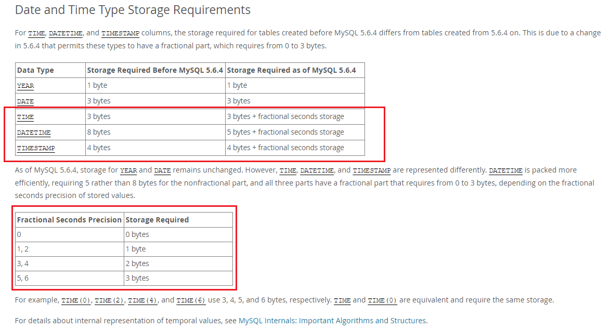
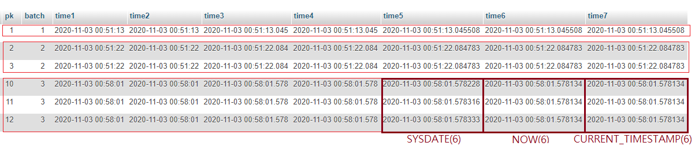

<!DOCTYPE html>
<html>
<head><meta name="generator" content="Hexo 3.8.0">
  <meta charset="utf-8">
  
  <title>MySQL時間型態的毫秒與微秒 | Mars&#39;s Blog</title>
  <meta name="viewport" content="width=device-width, initial-scale=1, maximum-scale=1">
  <meta name="description" content="一、說明平常用到MySQL時間欄位 DATETIME, TIMESTAMP, TIME 類型大多使用「秒」為最小單位，但其實這三種資料型態可以支援到小數下6位的精確度。   如果資料表沒有 unique 的需求(如Log)，可以使用適當精度的時間欄位當索引。 二、環境建置2.1 時間型態 2.2 建立資料表12345678910111213CREATE TABLE `test_microsecon">
<meta name="keywords" content="mysql,db,time">
<meta property="og:type" content="article">
<meta property="og:title" content="MySQL時間型態的毫秒與微秒">
<meta property="og:url" content="https://blog.mars-world.net/2019/12/07/mysql-microsecond/index.html">
<meta property="og:site_name" content="Mars&#39;s Blog">
<meta property="og:description" content="一、說明平常用到MySQL時間欄位 DATETIME, TIMESTAMP, TIME 類型大多使用「秒」為最小單位，但其實這三種資料型態可以支援到小數下6位的精確度。   如果資料表沒有 unique 的需求(如Log)，可以使用適當精度的時間欄位當索引。 二、環境建置2.1 時間型態 2.2 建立資料表12345678910111213CREATE TABLE `test_microsecon">
<meta property="og:locale" content="default">
<meta property="og:image" content="https://blog.mars-world.net/2019/12/07/mysql-microsecond/datatype-datetime.png">
<meta property="og:image" content="https://blog.mars-world.net/2019/12/07/mysql-microsecond/datatype-data.png">
<meta property="og:updated_time" content="2023-05-20T03:20:37.980Z">
<meta name="twitter:card" content="summary">
<meta name="twitter:title" content="MySQL時間型態的毫秒與微秒">
<meta name="twitter:description" content="一、說明平常用到MySQL時間欄位 DATETIME, TIMESTAMP, TIME 類型大多使用「秒」為最小單位，但其實這三種資料型態可以支援到小數下6位的精確度。   如果資料表沒有 unique 的需求(如Log)，可以使用適當精度的時間欄位當索引。 二、環境建置2.1 時間型態 2.2 建立資料表12345678910111213CREATE TABLE `test_microsecon">
<meta name="twitter:image" content="https://blog.mars-world.net/2019/12/07/mysql-microsecond/datatype-datetime.png">
  
  
  
    <link href="//fonts.googleapis.com/css?family=Source+Code+Pro" rel="stylesheet" type="text/css">
  

  <link rel="stylesheet" href="https://maxcdn.bootstrapcdn.com/bootstrap/3.3.6/css/bootstrap.min.css" integrity="sha384-1q8mTJOASx8j1Au+a5WDVnPi2lkFfwwEAa8hDDdjZlpLegxhjVME1fgjWPGmkzs7" crossorigin="anonymous">

  <link rel="stylesheet" href="https://maxcdn.bootstrapcdn.com/font-awesome/4.5.0/css/font-awesome.min.css" integrity="sha384-XdYbMnZ/QjLh6iI4ogqCTaIjrFk87ip+ekIjefZch0Y+PvJ8CDYtEs1ipDmPorQ+" crossorigin="anonymous">

  <link rel="stylesheet" href="/css/styles.css">
  

</head>
</html>
<body>
  <nav class="navbar navbar-inverse">
  <div class="container">
    <!-- Brand and toggle get grouped for better mobile display -->
    <div class="navbar-header">
      <button type="button" class="navbar-toggle collapsed" data-toggle="collapse" data-target="#main-menu-navbar" aria-expanded="false">
        <span class="sr-only">Toggle navigation</span>
        <span class="icon-bar"></span>
        <span class="icon-bar"></span>
        <span class="icon-bar"></span>
      </button>
      
    </div>

    <!-- Collect the nav links, forms, and other content for toggling -->
    <div class="collapse navbar-collapse" id="main-menu-navbar">
      <ul class="nav navbar-nav">
        
          <li><a class href="/index.html">Home</a></li>
        
          <li><a class href="/archives/">Archives</a></li>
        
          <li><a class href="https://github.com/marshung24">GitHub</a></li>
        
      </ul>

      <!--
      <ul class="nav navbar-nav navbar-right">
        
      </ul>
      -->
    </div><!-- /.navbar-collapse -->
  </div><!-- /.container-fluid -->
</nav>

  <div class="container">
    <div class="blog-header">
  <h1 class="blog-title">Mars&#39;s Blog</h1>
  
    <p class="lead blog-description">Mars&#39;s learning record</p>
  
</div>

    <div class="row">
        <div class="col-sm-8 blog-main">
          <article id="post-mysql-microsecond" class="article article-type-post" itemscope itemprop="blogPost">

  <header class="article-header">
    
  
    <h1 class="article-title" itemprop="name">
      MySQL時間型態的毫秒與微秒
    </h1>
  


  </header>

  <div class="article-meta">
    <div class="article-datetime">
  <a href="/2019/12/07/mysql-microsecond/" class="article-date"><time datetime="2019-12-07T12:56:34.000Z" itemprop="datePublished">2019-12-07</time></a>
</div>

    <div class="article-author">Mars Hung</div>
    
  <div class="article-category">
    <a class="article-category-link" href="/categories/mysql/">mysql</a>
  </div>


    <div class="article-reading">
  
  <span id="busuanzi_container_page_pv">文章閱讀量<span id="busuanzi_value_page_pv"></span>次</span>
  
</div>

  </div>
  <div class="article-inner">

    <div class="article-entry" itemprop="articleBody">
      
        
<div id="toc">
    <ol class="toc"><li class="toc-item toc-level-2"><a class="toc-link" href="#一、說明"><span class="toc-text">一、說明</span></a></li><li class="toc-item toc-level-2"><a class="toc-link" href="#二、環境建置"><span class="toc-text">二、環境建置</span></a><ol class="toc-child"><li class="toc-item toc-level-3"><a class="toc-link" href="#2-1-時間型態"><span class="toc-text">2.1 時間型態</span></a></li><li class="toc-item toc-level-3"><a class="toc-link" href="#2-2-建立資料表"><span class="toc-text">2.2 建立資料表</span></a></li><li class="toc-item toc-level-3"><a class="toc-link" href="#2-3-插入測試資料"><span class="toc-text">2.3 插入測試資料</span></a></li></ol></li><li class="toc-item toc-level-2"><a class="toc-link" href="#三、參考"><span class="toc-text">三、參考</span></a></li></ol>
</div>

        <h2 id="一、說明"><a href="#一、說明" class="headerlink" title="一、說明"></a>一、說明</h2><p>平常用到MySQL時間欄位 DATETIME, TIMESTAMP, TIME 類型大多使用「秒」為最小單位，但其實這三種資料型態可以支援到小數下6位的精確度。  </p>
<p>如果資料表沒有 unique 的需求(如Log)，可以使用適當精度的時間欄位當索引。</p>
<h2 id="二、環境建置"><a href="#二、環境建置" class="headerlink" title="二、環境建置"></a>二、環境建置</h2><h3 id="2-1-時間型態"><a href="#2-1-時間型態" class="headerlink" title="2.1 時間型態"></a>2.1 時間型態</h3><p></p>
<h3 id="2-2-建立資料表"><a href="#2-2-建立資料表" class="headerlink" title="2.2 建立資料表"></a>2.2 建立資料表</h3><figure class="highlight sql"><table><tr><td class="gutter"><pre><span class="line">1</span><br><span class="line">2</span><br><span class="line">3</span><br><span class="line">4</span><br><span class="line">5</span><br><span class="line">6</span><br><span class="line">7</span><br><span class="line">8</span><br><span class="line">9</span><br><span class="line">10</span><br><span class="line">11</span><br><span class="line">12</span><br><span class="line">13</span><br></pre></td><td class="code"><pre><span class="line"><span class="keyword">CREATE</span> <span class="keyword">TABLE</span> <span class="string">`test_microsecond`</span>(</span><br><span class="line">  <span class="string">`pk`</span> <span class="built_in">INT</span>(<span class="number">11</span>) <span class="keyword">UNSIGNED</span> <span class="keyword">NOT</span> <span class="literal">NULL</span> AUTO_INCREMENT,</span><br><span class="line">  <span class="string">`batch`</span> <span class="built_in">SMALLINT</span>(<span class="number">5</span>) <span class="keyword">UNSIGNED</span> <span class="keyword">NOT</span> <span class="literal">NULL</span> <span class="keyword">DEFAULT</span> <span class="number">0</span>,</span><br><span class="line">  <span class="string">`time1`</span> <span class="built_in">TIMESTAMP</span> <span class="literal">NULL</span> <span class="keyword">DEFAULT</span> <span class="literal">NULL</span>,</span><br><span class="line">  <span class="string">`time2`</span> DATETIME <span class="literal">NULL</span> <span class="keyword">DEFAULT</span> <span class="literal">NULL</span>,</span><br><span class="line">  <span class="string">`time3`</span> <span class="built_in">TIMESTAMP</span>(<span class="number">3</span>) <span class="literal">NULL</span> <span class="keyword">DEFAULT</span> <span class="literal">NULL</span>,</span><br><span class="line">  <span class="string">`time4`</span> DATETIME(<span class="number">3</span>) <span class="literal">NULL</span> <span class="keyword">DEFAULT</span> <span class="literal">NULL</span>,</span><br><span class="line">  <span class="string">`time5`</span> <span class="built_in">TIMESTAMP</span>(<span class="number">6</span>) <span class="literal">NULL</span> <span class="keyword">DEFAULT</span> <span class="literal">NULL</span>,</span><br><span class="line">  <span class="string">`time6`</span> DATETIME(<span class="number">6</span>) <span class="literal">NULL</span> <span class="keyword">DEFAULT</span> <span class="literal">NULL</span>,</span><br><span class="line">  <span class="string">`time7`</span> DATETIME(<span class="number">6</span>) <span class="keyword">DEFAULT</span> <span class="keyword">CURRENT_TIMESTAMP</span>(<span class="number">6</span>),</span><br><span class="line">  PRIMARY <span class="keyword">KEY</span>(<span class="string">`pk`</span>),</span><br><span class="line">  <span class="keyword">KEY</span> <span class="string">`time6`</span>(<span class="string">`time6`</span>)</span><br><span class="line">) <span class="keyword">ENGINE</span> = <span class="keyword">InnoDB</span> <span class="keyword">CHARSET</span> = utf8;</span><br></pre></td></tr></table></figure>
<blockquote>
<p>欄位 <code>time7</code> 可採用預設值方式自動獲取內容</p>
</blockquote>
<h3 id="2-3-插入測試資料"><a href="#2-3-插入測試資料" class="headerlink" title="2.3 插入測試資料"></a>2.3 插入測試資料</h3><p><strong>一次查詢中插入一筆</strong><br><figure class="highlight sql"><table><tr><td class="gutter"><pre><span class="line">1</span><br><span class="line">2</span><br></pre></td><td class="code"><pre><span class="line"><span class="keyword">INSERT</span> <span class="keyword">INTO</span> test_microsecond(<span class="string">`batch`</span>, <span class="string">`time1`</span>, <span class="string">`time2`</span>, <span class="string">`time3`</span>, <span class="string">`time4`</span>, <span class="string">`time5`</span>, <span class="string">`time6`</span>) <span class="keyword">VALUES</span></span><br><span class="line">(<span class="number">1</span>, <span class="keyword">CURRENT_TIMESTAMP</span>(), <span class="keyword">NOW</span>(), <span class="keyword">CURRENT_TIMESTAMP</span>(<span class="number">3</span>), <span class="keyword">NOW</span>(<span class="number">3</span>), <span class="keyword">CURRENT_TIMESTAMP</span>(<span class="number">6</span>), <span class="keyword">NOW</span>(<span class="number">6</span>));</span><br></pre></td></tr></table></figure></p>
<p><strong>一次查詢中插入二筆</strong><br><figure class="highlight sql"><table><tr><td class="gutter"><pre><span class="line">1</span><br><span class="line">2</span><br><span class="line">3</span><br></pre></td><td class="code"><pre><span class="line"><span class="keyword">INSERT</span> <span class="keyword">INTO</span> test_microsecond(<span class="string">`batch`</span>, <span class="string">`time1`</span>, <span class="string">`time2`</span>, <span class="string">`time3`</span>, <span class="string">`time4`</span>, <span class="string">`time5`</span>, <span class="string">`time6`</span>) <span class="keyword">VALUES</span></span><br><span class="line">(<span class="number">2</span>, <span class="keyword">CURRENT_TIMESTAMP</span>(), <span class="keyword">NOW</span>(), <span class="keyword">CURRENT_TIMESTAMP</span>(<span class="number">3</span>), <span class="keyword">NOW</span>(<span class="number">3</span>), <span class="keyword">CURRENT_TIMESTAMP</span>(<span class="number">6</span>), <span class="keyword">NOW</span>(<span class="number">6</span>)), </span><br><span class="line">(<span class="number">2</span>, <span class="keyword">CURRENT_TIMESTAMP</span>(), <span class="keyword">NOW</span>(), <span class="keyword">CURRENT_TIMESTAMP</span>(<span class="number">3</span>), <span class="keyword">NOW</span>(<span class="number">3</span>), <span class="keyword">CURRENT_TIMESTAMP</span>(<span class="number">6</span>), <span class="keyword">NOW</span>(<span class="number">6</span>));</span><br></pre></td></tr></table></figure></p>
<blockquote>
<p>CURRENT_TIMESTAMP()、NOW()取得的值皆為本次session的時間  </p>
</blockquote>
<p><strong>一次查詢中插入三筆 - SYSDATE()</strong><br><figure class="highlight sql"><table><tr><td class="gutter"><pre><span class="line">1</span><br><span class="line">2</span><br><span class="line">3</span><br><span class="line">4</span><br></pre></td><td class="code"><pre><span class="line"><span class="keyword">INSERT</span> <span class="keyword">INTO</span> test_microsecond(<span class="string">`batch`</span>, <span class="string">`time1`</span>, <span class="string">`time2`</span>, <span class="string">`time3`</span>, <span class="string">`time4`</span>, <span class="string">`time5`</span>, <span class="string">`time6`</span>) <span class="keyword">VALUES</span></span><br><span class="line">(<span class="number">3</span>, <span class="keyword">CURRENT_TIMESTAMP</span>(), <span class="keyword">NOW</span>(), <span class="keyword">CURRENT_TIMESTAMP</span>(<span class="number">3</span>), <span class="keyword">NOW</span>(<span class="number">3</span>), <span class="keyword">SYSDATE</span>(<span class="number">6</span>), <span class="keyword">NOW</span>(<span class="number">6</span>)), </span><br><span class="line">(<span class="number">3</span>, <span class="keyword">CURRENT_TIMESTAMP</span>(), <span class="keyword">NOW</span>(), <span class="keyword">CURRENT_TIMESTAMP</span>(<span class="number">3</span>), <span class="keyword">NOW</span>(<span class="number">3</span>), <span class="keyword">SYSDATE</span>(<span class="number">6</span>), <span class="keyword">NOW</span>(<span class="number">6</span>)), </span><br><span class="line">(<span class="number">3</span>, <span class="keyword">CURRENT_TIMESTAMP</span>(), <span class="keyword">NOW</span>(), <span class="keyword">CURRENT_TIMESTAMP</span>(<span class="number">3</span>), <span class="keyword">NOW</span>(<span class="number">3</span>), <span class="keyword">SYSDATE</span>(<span class="number">6</span>), <span class="keyword">NOW</span>(<span class="number">6</span>));</span><br></pre></td></tr></table></figure></p>
<blockquote>
<p>SYSDATE()取得的是系統時間，不同於CURRENT_TIMESTAMP()、NOW()取得的值皆為本次session的時間  </p>
</blockquote>
<p></p>
<h2 id="三、參考"><a href="#三、參考" class="headerlink" title="三、參考"></a>三、參考</h2><ul>
<li><a href="https://dev.mysql.com/doc/refman/5.7/en/storage-requirements.html" target="_blank" rel="noopener">Data Type Storage Requirements</a></li>
<li><a href="https://kknews.cc/zh-tw/code/65pe38v.html" target="_blank" rel="noopener">每日頭條-mysql 時間精確到毫秒微秒的處理方法</a></li>
</ul>

      
    </div>

    
      

    

    <footer class="article-footer">
      <a data-url="https://blog.mars-world.net/2019/12/07/mysql-microsecond/" data-id="clhx3p4xo001f7wn6o5ttmdsy" class="article-share-link">
        <i class="fa fa-share"></i> Share
      </a>
      
      
  <ul class="article-tag-list"><li class="article-tag-list-item"><a class="article-tag-list-link" href="/tags/db/">db</a></li><li class="article-tag-list-item"><a class="article-tag-list-link" href="/tags/mysql/">mysql</a></li><li class="article-tag-list-item"><a class="article-tag-list-link" href="/tags/time/">time</a></li></ul>


    </footer>
  </div>
  
    
<ul id="article-nav" class="nav nav-pills nav-justified">
  
  <li role="presentation">
    <a href="/2019/12/07/git-learning/" id="article-nav-older" class="article-nav-link-wrap">
      <i class="fa fa-chevron-left pull-left"></i>
      <span class="article-nav-link-title">Git常用指令學習</span>
    </a>
  </li>
  
  
</ul>


  
</article>


        </div>
        <div class="col-sm-3 col-sm-offset-1 blog-sidebar">
          
  
  <div class="sidebar-module">
    <h4>Recents</h4>
    <ul class="sidebar-module-list">
      
        <li>
          <a href="/2019/12/07/mysql-microsecond/">MySQL時間型態的毫秒與微秒</a>
        </li>
      
        <li>
          <a href="/2019/12/07/git-learning/">Git常用指令學習</a>
        </li>
      
        <li>
          <a href="/2019/11/14/web-server-xampp-install/">Web伺服器安裝(XAMPP)-Windows</a>
        </li>
      
        <li>
          <a href="/2019/08/18/crud-design-04/">CRUD表單設計 Day-04 Javascript</a>
        </li>
      
        <li>
          <a href="/2019/08/17/crud-design-03/">CRUD表單設計 Day-03 安裝Bootstrap4</a>
        </li>
      
    </ul>
  </div>


  
  <div class="sidebar-module">
    <h4>Archives</h4>
    <ul class="sidebar-module-list"><li class="sidebar-module-list-item"><a class="sidebar-module-list-link" href="/archives/2019/12/">December 2019</a><span class="sidebar-module-list-count">2</span></li><li class="sidebar-module-list-item"><a class="sidebar-module-list-link" href="/archives/2019/11/">November 2019</a><span class="sidebar-module-list-count">1</span></li><li class="sidebar-module-list-item"><a class="sidebar-module-list-link" href="/archives/2019/08/">August 2019</a><span class="sidebar-module-list-count">4</span></li><li class="sidebar-module-list-item"><a class="sidebar-module-list-link" href="/archives/2019/07/">July 2019</a><span class="sidebar-module-list-count">6</span></li><li class="sidebar-module-list-item"><a class="sidebar-module-list-link" href="/archives/2019/06/">June 2019</a><span class="sidebar-module-list-count">1</span></li><li class="sidebar-module-list-item"><a class="sidebar-module-list-link" href="/archives/2019/05/">May 2019</a><span class="sidebar-module-list-count">4</span></li><li class="sidebar-module-list-item"><a class="sidebar-module-list-link" href="/archives/2019/04/">April 2019</a><span class="sidebar-module-list-count">2</span></li><li class="sidebar-module-list-item"><a class="sidebar-module-list-link" href="/archives/2017/09/">September 2017</a><span class="sidebar-module-list-count">2</span></li></ul>
  </div>


  
  <div class="sidebar-module">
    <h4>Categories</h4>
    <ul class="sidebar-module-list"><li class="sidebar-module-list-item"><a class="sidebar-module-list-link" href="/categories/doc/">doc</a><span class="sidebar-module-list-count">2</span></li><li class="sidebar-module-list-item"><a class="sidebar-module-list-link" href="/categories/info/">info</a><span class="sidebar-module-list-count">3</span></li><li class="sidebar-module-list-item"><a class="sidebar-module-list-link" href="/categories/mysql/">mysql</a><span class="sidebar-module-list-count">1</span></li><li class="sidebar-module-list-item"><a class="sidebar-module-list-link" href="/categories/security/">security</a><span class="sidebar-module-list-count">1</span></li><li class="sidebar-module-list-item"><a class="sidebar-module-list-link" href="/categories/server/">server</a><span class="sidebar-module-list-count">2</span></li><li class="sidebar-module-list-item"><a class="sidebar-module-list-link" href="/categories/test/">test</a><span class="sidebar-module-list-count">1</span></li><li class="sidebar-module-list-item"><a class="sidebar-module-list-link" href="/categories/tools/">tools</a><span class="sidebar-module-list-count">6</span></li><li class="sidebar-module-list-item"><a class="sidebar-module-list-link" href="/categories/training/">training</a><span class="sidebar-module-list-count">5</span></li><li class="sidebar-module-list-item"><a class="sidebar-module-list-link" href="/categories/web/">web</a><span class="sidebar-module-list-count">1</span></li></ul>
  </div>


  
  <div class="sidebar-module">
    <h4>Tags</h4>
    <ul class="sidebar-module-list"><li class="sidebar-module-list-item"><a class="sidebar-module-list-link" href="/tags/account/">account</a><span class="sidebar-module-list-count">1</span></li><li class="sidebar-module-list-item"><a class="sidebar-module-list-link" href="/tags/ajax/">ajax</a><span class="sidebar-module-list-count">1</span></li><li class="sidebar-module-list-item"><a class="sidebar-module-list-link" href="/tags/apache/">apache</a><span class="sidebar-module-list-count">1</span></li><li class="sidebar-module-list-item"><a class="sidebar-module-list-link" href="/tags/blog/">blog</a><span class="sidebar-module-list-count">1</span></li><li class="sidebar-module-list-item"><a class="sidebar-module-list-link" href="/tags/bootstrap/">bootstrap</a><span class="sidebar-module-list-count">1</span></li><li class="sidebar-module-list-item"><a class="sidebar-module-list-link" href="/tags/codeingiter/">codeingiter</a><span class="sidebar-module-list-count">1</span></li><li class="sidebar-module-list-item"><a class="sidebar-module-list-link" href="/tags/coding/">coding</a><span class="sidebar-module-list-count">5</span></li><li class="sidebar-module-list-item"><a class="sidebar-module-list-link" href="/tags/composer/">composer</a><span class="sidebar-module-list-count">1</span></li><li class="sidebar-module-list-item"><a class="sidebar-module-list-link" href="/tags/db/">db</a><span class="sidebar-module-list-count">1</span></li><li class="sidebar-module-list-item"><a class="sidebar-module-list-link" href="/tags/debug/">debug</a><span class="sidebar-module-list-count">1</span></li><li class="sidebar-module-list-item"><a class="sidebar-module-list-link" href="/tags/dev/">dev</a><span class="sidebar-module-list-count">18</span></li><li class="sidebar-module-list-item"><a class="sidebar-module-list-link" href="/tags/doc/">doc</a><span class="sidebar-module-list-count">3</span></li><li class="sidebar-module-list-item"><a class="sidebar-module-list-link" href="/tags/env/">env</a><span class="sidebar-module-list-count">1</span></li><li class="sidebar-module-list-item"><a class="sidebar-module-list-link" href="/tags/git/">git</a><span class="sidebar-module-list-count">3</span></li><li class="sidebar-module-list-item"><a class="sidebar-module-list-link" href="/tags/github/">github</a><span class="sidebar-module-list-count">1</span></li><li class="sidebar-module-list-item"><a class="sidebar-module-list-link" href="/tags/hexo/">hexo</a><span class="sidebar-module-list-count">1</span></li><li class="sidebar-module-list-item"><a class="sidebar-module-list-link" href="/tags/ide/">ide</a><span class="sidebar-module-list-count">1</span></li><li class="sidebar-module-list-item"><a class="sidebar-module-list-link" href="/tags/info/">info</a><span class="sidebar-module-list-count">3</span></li><li class="sidebar-module-list-item"><a class="sidebar-module-list-link" href="/tags/javascript/">javascript</a><span class="sidebar-module-list-count">2</span></li><li class="sidebar-module-list-item"><a class="sidebar-module-list-link" href="/tags/jquery/">jquery</a><span class="sidebar-module-list-count">1</span></li><li class="sidebar-module-list-item"><a class="sidebar-module-list-link" href="/tags/linux/">linux</a><span class="sidebar-module-list-count">2</span></li><li class="sidebar-module-list-item"><a class="sidebar-module-list-link" href="/tags/mysql/">mysql</a><span class="sidebar-module-list-count">3</span></li><li class="sidebar-module-list-item"><a class="sidebar-module-list-link" href="/tags/nginx/">nginx</a><span class="sidebar-module-list-count">2</span></li><li class="sidebar-module-list-item"><a class="sidebar-module-list-link" href="/tags/nodejs/">nodejs</a><span class="sidebar-module-list-count">1</span></li><li class="sidebar-module-list-item"><a class="sidebar-module-list-link" href="/tags/php/">php</a><span class="sidebar-module-list-count">9</span></li><li class="sidebar-module-list-item"><a class="sidebar-module-list-link" href="/tags/phpunit/">phpunit</a><span class="sidebar-module-list-count">1</span></li><li class="sidebar-module-list-item"><a class="sidebar-module-list-link" href="/tags/sa/">sa</a><span class="sidebar-module-list-count">1</span></li><li class="sidebar-module-list-item"><a class="sidebar-module-list-link" href="/tags/sd/">sd</a><span class="sidebar-module-list-count">1</span></li><li class="sidebar-module-list-item"><a class="sidebar-module-list-link" href="/tags/security/">security</a><span class="sidebar-module-list-count">1</span></li><li class="sidebar-module-list-item"><a class="sidebar-module-list-link" href="/tags/server/">server</a><span class="sidebar-module-list-count">2</span></li><li class="sidebar-module-list-item"><a class="sidebar-module-list-link" href="/tags/setting/">setting</a><span class="sidebar-module-list-count">1</span></li><li class="sidebar-module-list-item"><a class="sidebar-module-list-link" href="/tags/sop/">sop</a><span class="sidebar-module-list-count">2</span></li><li class="sidebar-module-list-item"><a class="sidebar-module-list-link" href="/tags/standard/">standard</a><span class="sidebar-module-list-count">2</span></li><li class="sidebar-module-list-item"><a class="sidebar-module-list-link" href="/tags/style/">style</a><span class="sidebar-module-list-count">1</span></li><li class="sidebar-module-list-item"><a class="sidebar-module-list-link" href="/tags/test/">test</a><span class="sidebar-module-list-count">2</span></li><li class="sidebar-module-list-item"><a class="sidebar-module-list-link" href="/tags/time/">time</a><span class="sidebar-module-list-count">1</span></li><li class="sidebar-module-list-item"><a class="sidebar-module-list-link" href="/tags/tools/">tools</a><span class="sidebar-module-list-count">6</span></li><li class="sidebar-module-list-item"><a class="sidebar-module-list-link" href="/tags/trace/">trace</a><span class="sidebar-module-list-count">1</span></li><li class="sidebar-module-list-item"><a class="sidebar-module-list-link" href="/tags/training/">training</a><span class="sidebar-module-list-count">5</span></li><li class="sidebar-module-list-item"><a class="sidebar-module-list-link" href="/tags/unit-test/">unit test</a><span class="sidebar-module-list-count">1</span></li><li class="sidebar-module-list-item"><a class="sidebar-module-list-link" href="/tags/vscode/">vscode</a><span class="sidebar-module-list-count">1</span></li><li class="sidebar-module-list-item"><a class="sidebar-module-list-link" href="/tags/web/">web</a><span class="sidebar-module-list-count">8</span></li><li class="sidebar-module-list-item"><a class="sidebar-module-list-link" href="/tags/windows/">windows</a><span class="sidebar-module-list-count">1</span></li></ul>
  </div>


        </div>
    </div>
  </div>
  <footer class="blog-footer">
  <div class="container">
    <div id="footer-info" class="inner">
      &copy; 2023 Mars Hung Powered by <a href="http://hexo.io/" target="_blank">Hexo</a>
    </div>
  
  
    <script async src="//busuanzi.ibruce.info/busuanzi/2.3/busuanzi.pure.mini.js"></script>
    <span id="busuanzi_container_site_pv">總訪問量<span id="busuanzi_value_site_pv"></span>次</span>
    <span class="post-meta-divider">|</span>
    <span id="busuanzi_container_site_uv">訪客數<span id="busuanzi_value_site_uv"></span>人</span>
  
  </div>
</footer>

  

<script src="https://ajax.googleapis.com/ajax/libs/jquery/2.1.4/jquery.min.js" integrity="sha384-8gBf6Y4YYq7Jx97PIqmTwLPin4hxIzQw5aDmUg/DDhul9fFpbbLcLh3nTIIDJKhx" crossorigin="anonymous"></script>

<script src="https://maxcdn.bootstrapcdn.com/bootstrap/3.3.6/js/bootstrap.min.js" integrity="sha384-0mSbJDEHialfmuBBQP6A4Qrprq5OVfW37PRR3j5ELqxss1yVqOtnepnHVP9aJ7xS" crossorigin="anonymous"></script>


<script src="/js/script.js"></script>

</body>
</html>
